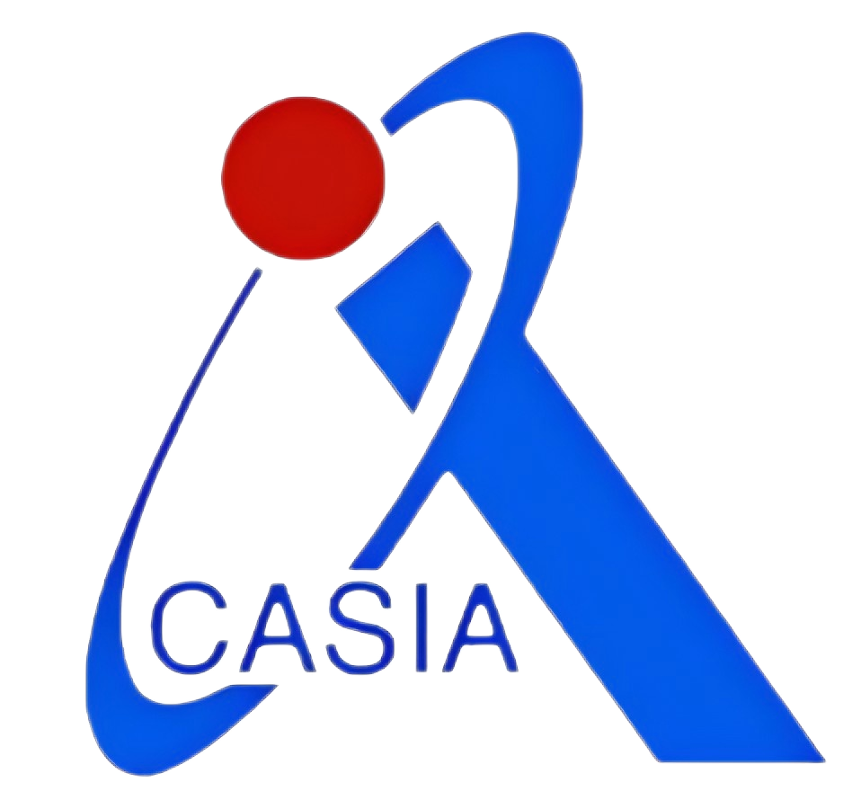
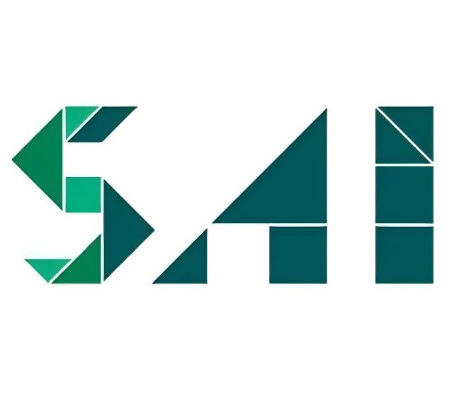

杨佳澍 (Jiashu Yang)
Hello, I'm Jiashu Yang (杨佳澍), My research interests include open-world visual understanding and large models (language, vision, and action). I am committed to the research of practical and deployable intelligent algorithms. In the field of large language models, I led and open-sourced Wenyuan Pavilion, a community focused on developing Chinese-culture-centered open-source LLMs.
If you are interested in discussing or collaborating with me, please feel free to contact me via email.
Under the supervision of Prof. Wenzhao Lian, I conducted a research internship focused on robotic-arm manipulation driven by active visual perception.Here is the link to our project
I worked with Prof. Huchuan Lu (IEEE Fellow) and Prof. Xu Jia on research related to multimodal Retrieval-Augmented Generation (RAG).
📝 Publications
📖 Education
- Sincerely looking for PhD positions for fall 2026 admission!
💻 Projects
- 📂 Our multi-modal PDF interaction tool "Squirrel" will be launched on January 15, 2025!
-
Wenyuan Pavilion: Ancient Chinese Language Community
I lead a research community focused on domain-specific models for Ancient Chinese and Literature. We have open-sourced various models and datasets to support scientific research and project implementation.
💼 Work Experience
-
2023.11 - 2024.08
Institute of Automation, Chinese Academy of Sciences (CAS) -
2024.05 - 2025.01
IIAU lab, Research Assistant -
2025.04 - 2025.07
ByteDance, Beijing, Applications of Large Language Models -
2025.07 - 2025.09
IIAU lab, School of Artificial Intelligence, Shanghai Jiao Tong University,Research Assistant -
2025.12 - now
Meituan, Beijing, Longcat Interaction
🎖 Honors and Awards
- 2023: Robocup, Advanced Vision Track - Industrial Measurement, National First Prize
- 2024: Robocup, Advanced Vision Track - 3D Detection, National Third Prize
- 2024: Robocup, Advanced Vision Track - Industrial Measurement, National Third Prize
- 2024: China University Computer Competition, National Third Prize
About Life
🚧 This section is under construction... 🚧